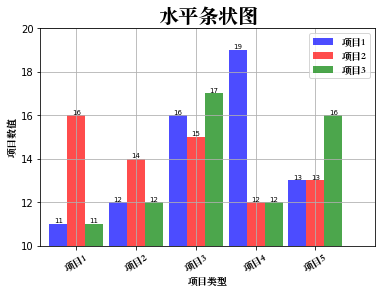
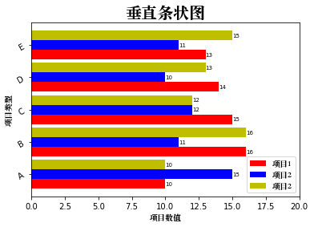
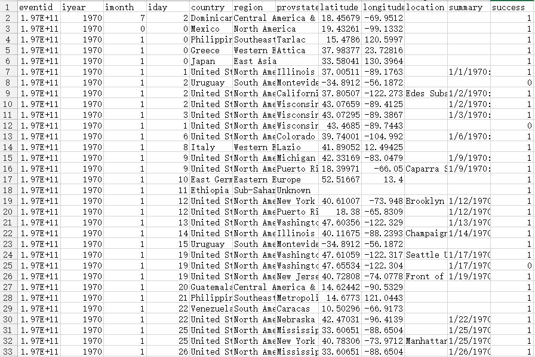
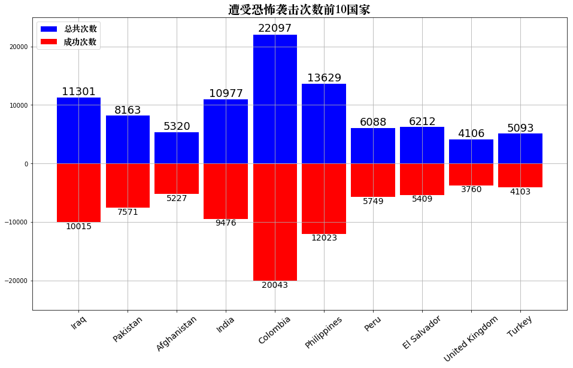

<!DOCTYPE HTML>
<html lang="en" >
    
    <head>
        
        <meta charset="UTF-8">
        <meta http-equiv="X-UA-Compatible" content="IE=edge" />
        <title>条状图和案例 | Linkedln：2016年中国互联网最热职位人才库报告</title>
        <meta content="text/html; charset=utf-8" http-equiv="Content-Type">
        <meta name="description" content="">
        <meta name="generator" content="GitBook 2.6.7">
        
        
        <meta name="HandheldFriendly" content="true"/>
        <meta name="viewport" content="width=device-width, initial-scale=1, user-scalable=no">
        <meta name="apple-mobile-web-app-capable" content="yes">
        <meta name="apple-mobile-web-app-status-bar-style" content="black">
        <link rel="apple-touch-icon-precomposed" sizes="152x152" href="../gitbook/images/apple-touch-icon-precomposed-152.png">
        <link rel="shortcut icon" href="../gitbook/images/favicon.ico" type="image/x-icon">
        
    <link rel="stylesheet" href="../gitbook/style.css">
    
        
        <link rel="stylesheet" href="../gitbook/plugins/gitbook-plugin-highlight/website.css">
        
    
        
        <link rel="stylesheet" href="../gitbook/plugins/gitbook-plugin-search/search.css">
        
    
        
        <link rel="stylesheet" href="../gitbook/plugins/gitbook-plugin-fontsettings/website.css">
        
    
    

        
    
    
    <link rel="next" href="../part04/4.1.3_饼图和案例.html" />
    
    
    <link rel="prev" href="../part04/4.1.1_线性图和案例.html" />
    

        
    </head>
    <body>
        
        
    <div class="book"
        data-level="4.1.2"
        data-chapter-title="条状图和案例"
        data-filepath="part04/4.1.2_条状图和案例.md"
        data-basepath=".."
        data-revision="Thu Dec 14 2017 23:24:20 GMT+0800 (CST)"
        data-innerlanguage="">
    

<div class="book-summary">
    <nav role="navigation">
        <ul class="summary">
            
            
            
            

            

            
    
        <li class="chapter " data-level="0" data-path="index.html">
            
                
                    <a href="../index.html">
                
                        <i class="fa fa-check"></i>
                        
                        数据分析
                    </a>
            
            
        </li>
    
        <li class="chapter " data-level="1" data-path="part01/1_数据分析概述.html">
            
                
                    <a href="../part01/1_数据分析概述.html">
                
                        <i class="fa fa-check"></i>
                        
                            <b>1.</b>
                        
                        数据分析概述
                    </a>
            
            
            <ul class="articles">
                
    
        <li class="chapter " data-level="1.1" data-path="part01/1.1_Python数据分析.html">
            
                
                    <a href="../part01/1.1_Python数据分析.html">
                
                        <i class="fa fa-check"></i>
                        
                            <b>1.1.</b>
                        
                        Python数据分析
                    </a>
            
            
        </li>
    
        <li class="chapter " data-level="1.2" data-path="part01/1.2_jupyper_notebook.html">
            
                
                    <a href="../part01/1.2_jupyper_notebook.html">
                
                        <i class="fa fa-check"></i>
                        
                            <b>1.2.</b>
                        
                        jupyter notebook
                    </a>
            
            
        </li>
    

            </ul>
            
        </li>
    
        <li class="chapter " data-level="2" data-path="part02/2_Numpy.html">
            
                
                    <a href="../part02/2_Numpy.html">
                
                        <i class="fa fa-check"></i>
                        
                            <b>2.</b>
                        
                        Numpy
                    </a>
            
            
            <ul class="articles">
                
    
        <li class="chapter " data-level="2.1" data-path="part02/2.1_创建数组.html">
            
                
                    <a href="../part02/2.1_创建数组.html">
                
                        <i class="fa fa-check"></i>
                        
                            <b>2.1.</b>
                        
                        创建数组
                    </a>
            
            
        </li>
    
        <li class="chapter " data-level="2.2" data-path="part02/2.2_数据类型.html">
            
                
                    <a href="../part02/2.2_数据类型.html">
                
                        <i class="fa fa-check"></i>
                        
                            <b>2.2.</b>
                        
                        数据类型
                    </a>
            
            
        </li>
    
        <li class="chapter " data-level="2.3" data-path="part02/2.3_数组运算.html">
            
                
                    <a href="../part02/2.3_数组运算.html">
                
                        <i class="fa fa-check"></i>
                        
                            <b>2.3.</b>
                        
                        数组运算
                    </a>
            
            
        </li>
    
        <li class="chapter " data-level="2.4" data-path="part02/2.4_数组索引和切片.html">
            
                
                    <a href="../part02/2.4_数组索引和切片.html">
                
                        <i class="fa fa-check"></i>
                        
                            <b>2.4.</b>
                        
                        数组索引和切片
                    </a>
            
            
        </li>
    
        <li class="chapter " data-level="2.5" data-path="part02/2.5_数组函数.html">
            
                
                    <a href="../part02/2.5_数组函数.html">
                
                        <i class="fa fa-check"></i>
                        
                            <b>2.5.</b>
                        
                        数组函数
                    </a>
            
            
            <ul class="articles">
                
    
        <li class="chapter " data-level="2.5.1" data-path="part02/2.5.1_通用元素级数组函数.html">
            
                
                    <a href="../part02/2.5.1_通用元素级数组函数.html">
                
                        <i class="fa fa-check"></i>
                        
                            <b>2.5.1.</b>
                        
                        通用元素级数组函数
                    </a>
            
            
        </li>
    
        <li class="chapter " data-level="2.5.2" data-path="part02/2.5.2_数组统计函数.html">
            
                
                    <a href="../part02/2.5.2_数组统计函数.html">
                
                        <i class="fa fa-check"></i>
                        
                            <b>2.5.2.</b>
                        
                        数组统计函数
                    </a>
            
            
        </li>
    
        <li class="chapter " data-level="2.5.3" data-path="part02/2.5.3_all和any函数.html">
            
                
                    <a href="../part02/2.5.3_all和any函数.html">
                
                        <i class="fa fa-check"></i>
                        
                            <b>2.5.3.</b>
                        
                        all和any函数
                    </a>
            
            
        </li>
    
        <li class="chapter " data-level="2.5.4" data-path="part02/2.5.4_添加和删除函数.html">
            
                
                    <a href="../part02/2.5.4_添加和删除函数.html">
                
                        <i class="fa fa-check"></i>
                        
                            <b>2.5.4.</b>
                        
                        添加和删除函数
                    </a>
            
            
        </li>
    
        <li class="chapter " data-level="2.5.5" data-path="part02/2.5.5_唯一化和集合函数.html">
            
                
                    <a href="../part02/2.5.5_唯一化和集合函数.html">
                
                        <i class="fa fa-check"></i>
                        
                            <b>2.5.5.</b>
                        
                        唯一化和集合函数
                    </a>
            
            
        </li>
    
        <li class="chapter " data-level="2.5.6" data-path="part02/2.5.6_随机数生成函数.html">
            
                
                    <a href="../part02/2.5.6_随机数生成函数.html">
                
                        <i class="fa fa-check"></i>
                        
                            <b>2.5.6.</b>
                        
                        随机数生成函数
                    </a>
            
            
        </li>
    
        <li class="chapter " data-level="2.5.7" data-path="part02/2.5.7_数组排序函数.html">
            
                
                    <a href="../part02/2.5.7_数组排序函数.html">
                
                        <i class="fa fa-check"></i>
                        
                            <b>2.5.7.</b>
                        
                        数组排序函数
                    </a>
            
            
        </li>
    

            </ul>
            
        </li>
    
        <li class="chapter " data-level="2.6" data-path="part02/2.6_数组文件输入输出.html">
            
                
                    <a href="../part02/2.6_数组文件输入输出.html">
                
                        <i class="fa fa-check"></i>
                        
                            <b>2.6.</b>
                        
                        数组文件输入输出
                    </a>
            
            
            <ul class="articles">
                
    
        <li class="chapter " data-level="2.6.1" data-path="part02/2.6.1_数组输入和输出.html">
            
                
                    <a href="../part02/2.6.1_数组输入和输出.html">
                
                        <i class="fa fa-check"></i>
                        
                            <b>2.6.1.</b>
                        
                        数组输入和输出
                    </a>
            
            
        </li>
    
        <li class="chapter " data-level="2.6.2" data-path="part02/2.6.2_读写文本文件.html">
            
                
                    <a href="../part02/2.6.2_读写文本文件.html">
                
                        <i class="fa fa-check"></i>
                        
                            <b>2.6.2.</b>
                        
                        读写文本文件
                    </a>
            
            
        </li>
    

            </ul>
            
        </li>
    
        <li class="chapter " data-level="2.7" data-path="part02/2.7_案例_亚洲国家人口数据计算.html">
            
                
                    <a href="../part02/2.7_案例_亚洲国家人口数据计算.html">
                
                        <i class="fa fa-check"></i>
                        
                            <b>2.7.</b>
                        
                        案例_亚洲国家人口数据
                    </a>
            
            
        </li>
    

            </ul>
            
        </li>
    
        <li class="chapter " data-level="3" data-path="part03/3_Pandas.html">
            
                
                    <a href="../part03/3_Pandas.html">
                
                        <i class="fa fa-check"></i>
                        
                            <b>3.</b>
                        
                        Pandas
                    </a>
            
            
            <ul class="articles">
                
    
        <li class="chapter " data-level="3.1" data-path="part03/3.1_Series.html">
            
                
                    <a href="../part03/3.1_Series.html">
                
                        <i class="fa fa-check"></i>
                        
                            <b>3.1.</b>
                        
                        Series
                    </a>
            
            
            <ul class="articles">
                
    
        <li class="chapter " data-level="3.1.1" data-path="part03/3.1.1_Series创建.html">
            
                
                    <a href="../part03/3.1.1_Series创建.html">
                
                        <i class="fa fa-check"></i>
                        
                            <b>3.1.1.</b>
                        
                        Series创建
                    </a>
            
            
        </li>
    
        <li class="chapter " data-level="3.1.2" data-path="part03/3.1.2_Series操作.html">
            
                
                    <a href="../part03/3.1.2_Series操作.html">
                
                        <i class="fa fa-check"></i>
                        
                            <b>3.1.2.</b>
                        
                        Series操作
                    </a>
            
            
        </li>
    
        <li class="chapter " data-level="3.1.3" data-path="part03/3.1.3_了解NaN.html">
            
                
                    <a href="../part03/3.1.3_了解NaN.html">
                
                        <i class="fa fa-check"></i>
                        
                            <b>3.1.3.</b>
                        
                        了解NaN
                    </a>
            
            
        </li>
    

            </ul>
            
        </li>
    
        <li class="chapter " data-level="3.2" data-path="part03/3.2_DataFrame.html">
            
                
                    <a href="../part03/3.2_DataFrame.html">
                
                        <i class="fa fa-check"></i>
                        
                            <b>3.2.</b>
                        
                        DataFrame
                    </a>
            
            
            <ul class="articles">
                
    
        <li class="chapter " data-level="3.2.1" data-path="part03/3.2.1_DataFrame创建.html">
            
                
                    <a href="../part03/3.2.1_DataFrame创建.html">
                
                        <i class="fa fa-check"></i>
                        
                            <b>3.2.1.</b>
                        
                        创建对象
                    </a>
            
            
        </li>
    
        <li class="chapter " data-level="3.2.2" data-path="part03/3.2.2_DataFrame操作.html">
            
                
                    <a href="../part03/3.2.2_DataFrame操作.html">
                
                        <i class="fa fa-check"></i>
                        
                            <b>3.2.2.</b>
                        
                        数据操作
                    </a>
            
            
        </li>
    
        <li class="chapter " data-level="3.2.3" data-path="part03/3.2.3_算数运算和数据对齐.html">
            
                
                    <a href="../part03/3.2.3_算数运算和数据对齐.html">
                
                        <i class="fa fa-check"></i>
                        
                            <b>3.2.3.</b>
                        
                        算数运算和数据对齐
                    </a>
            
            
        </li>
    
        <li class="chapter " data-level="3.2.4" data-path="part03/3.2.4_函数应用-apply函数.html">
            
                
                    <a href="../part03/3.2.4_函数应用-apply函数.html">
                
                        <i class="fa fa-check"></i>
                        
                            <b>3.2.4.</b>
                        
                        函数应用和映射了解NaN
                    </a>
            
            
        </li>
    
        <li class="chapter " data-level="3.2.5" data-path="part03/3.2.5_Pandas排序.html">
            
                
                    <a href="../part03/3.2.5_Pandas排序.html">
                
                        <i class="fa fa-check"></i>
                        
                            <b>3.2.5.</b>
                        
                        Pandas排序
                    </a>
            
            
        </li>
    
        <li class="chapter " data-level="3.2.6" data-path="part03/3.2.6_等级索引和分级.html">
            
                
                    <a href="../part03/3.2.6_等级索引和分级.html">
                
                        <i class="fa fa-check"></i>
                        
                            <b>3.2.6.</b>
                        
                        等级索引和分级
                    </a>
            
            
        </li>
    
        <li class="chapter " data-level="3.2.7" data-path="part03/3.2.7_处理缺失数据.html">
            
                
                    <a href="../part03/3.2.7_处理缺失数据.html">
                
                        <i class="fa fa-check"></i>
                        
                            <b>3.2.7.</b>
                        
                        处理缺失数据
                    </a>
            
            
        </li>
    

            </ul>
            
        </li>
    
        <li class="chapter " data-level="3.3" data-path="part03/3.3_数据准备.html">
            
                
                    <a href="../part03/3.3_数据准备.html">
                
                        <i class="fa fa-check"></i>
                        
                            <b>3.3.</b>
                        
                        数据准备
                    </a>
            
            
            <ul class="articles">
                
    
        <li class="chapter " data-level="3.3.1" data-path="part03/3.3.1_数据组装.html">
            
                
                    <a href="../part03/3.3.1_数据组装.html">
                
                        <i class="fa fa-check"></i>
                        
                            <b>3.3.1.</b>
                        
                        数据组装
                    </a>
            
            
        </li>
    
        <li class="chapter " data-level="3.3.2" data-path="part03/3.3.2_轴向旋转.html">
            
                
                    <a href="../part03/3.3.2_轴向旋转.html">
                
                        <i class="fa fa-check"></i>
                        
                            <b>3.3.2.</b>
                        
                        轴向旋转
                    </a>
            
            
        </li>
    

            </ul>
            
        </li>
    
        <li class="chapter " data-level="3.4" data-path="part03/3.4_数据转换.html">
            
                
                    <a href="../part03/3.4_数据转换.html">
                
                        <i class="fa fa-check"></i>
                        
                            <b>3.4.</b>
                        
                        数据转换
                    </a>
            
            
            <ul class="articles">
                
    
        <li class="chapter " data-level="3.4.1" data-path="part03/3.4.1_删除重复行.html">
            
                
                    <a href="../part03/3.4.1_删除重复行.html">
                
                        <i class="fa fa-check"></i>
                        
                            <b>3.4.1.</b>
                        
                        删除重复行列
                    </a>
            
            
        </li>
    
        <li class="chapter " data-level="3.4.2" data-path="part03/3.4.2_映射.html">
            
                
                    <a href="../part03/3.4.2_映射.html">
                
                        <i class="fa fa-check"></i>
                        
                            <b>3.4.2.</b>
                        
                        映射
                    </a>
            
            
        </li>
    
        <li class="chapter " data-level="3.4.3" data-path="part03/3.4.3_排序-take函数.html">
            
                
                    <a href="../part03/3.4.3_排序-take函数.html">
                
                        <i class="fa fa-check"></i>
                        
                            <b>3.4.3.</b>
                        
                        排序
                    </a>
            
            
        </li>
    

            </ul>
            
        </li>
    
        <li class="chapter " data-level="3.5" data-path="part03/3.5_数据聚合.html">
            
                
                    <a href="../part03/3.5_数据聚合.html">
                
                        <i class="fa fa-check"></i>
                        
                            <b>3.5.</b>
                        
                        数据聚合
                    </a>
            
            
            <ul class="articles">
                
    
        <li class="chapter " data-level="3.5.1" data-path="part03/3.5.1_分组-GroupBy.html">
            
                
                    <a href="../part03/3.5.1_分组-GroupBy.html">
                
                        <i class="fa fa-check"></i>
                        
                            <b>3.5.1.</b>
                        
                        分组(GroupBy)
                    </a>
            
            
        </li>
    
        <li class="chapter " data-level="3.5.2" data-path="part03/3.5.2_聚合-Aggregation.html">
            
                
                    <a href="../part03/3.5.2_聚合-Aggregation.html">
                
                        <i class="fa fa-check"></i>
                        
                            <b>3.5.2.</b>
                        
                        聚合(Aggregation)
                    </a>
            
            
        </li>
    

            </ul>
            
        </li>
    
        <li class="chapter " data-level="3.6" data-path="part03/3.6_数据读写.html">
            
                
                    <a href="../part03/3.6_数据读写.html">
                
                        <i class="fa fa-check"></i>
                        
                            <b>3.6.</b>
                        
                        数据读写
                    </a>
            
            
            <ul class="articles">
                
    
        <li class="chapter " data-level="3.6.1" data-path="part03/3.6.1_读写CSV文本数据.html">
            
                
                    <a href="../part03/3.6.1_读写CSV文本数据.html">
                
                        <i class="fa fa-check"></i>
                        
                            <b>3.6.1.</b>
                        
                        读写CSV文本数据
                    </a>
            
            
        </li>
    
        <li class="chapter " data-level="3.6.2" data-path="part03/3.6.2_读写HTML文本文件数据.html">
            
                
                    <a href="../part03/3.6.2_读写HTML文本文件数据.html">
                
                        <i class="fa fa-check"></i>
                        
                            <b>3.6.2.</b>
                        
                        读写HTML文本文件数据
                    </a>
            
            
        </li>
    
        <li class="chapter " data-level="3.6.3" data-path="part03/3.6.3_读写数据库数据.html">
            
                
                    <a href="../part03/3.6.3_读写数据库数据.html">
                
                        <i class="fa fa-check"></i>
                        
                            <b>3.6.3.</b>
                        
                        读写数据库数据
                    </a>
            
            
        </li>
    

            </ul>
            
        </li>
    

            </ul>
            
        </li>
    
        <li class="chapter " data-level="4" data-path="part04/4_Matplotlib.html">
            
                
                    <a href="../part04/4_Matplotlib.html">
                
                        <i class="fa fa-check"></i>
                        
                            <b>4.</b>
                        
                        Matplotlib
                    </a>
            
            
            <ul class="articles">
                
    
        <li class="chapter " data-level="4.1" data-path="part04/4.1_图表绘制.html">
            
                
                    <a href="../part04/4.1_图表绘制.html">
                
                        <i class="fa fa-check"></i>
                        
                            <b>4.1.</b>
                        
                        图标绘制
                    </a>
            
            
            <ul class="articles">
                
    
        <li class="chapter " data-level="4.1.1" data-path="part04/4.1.1_线性图和案例.html">
            
                
                    <a href="../part04/4.1.1_线性图和案例.html">
                
                        <i class="fa fa-check"></i>
                        
                            <b>4.1.1.</b>
                        
                        线性图和案例
                    </a>
            
            
        </li>
    
        <li class="chapter active" data-level="4.1.2" data-path="part04/4.1.2_条状图和案例.html">
            
                
                    <a href="../part04/4.1.2_条状图和案例.html">
                
                        <i class="fa fa-check"></i>
                        
                            <b>4.1.2.</b>
                        
                        条状图和案例
                    </a>
            
            
        </li>
    
        <li class="chapter " data-level="4.1.3" data-path="part04/4.1.3_饼图和案例.html">
            
                
                    <a href="../part04/4.1.3_饼图和案例.html">
                
                        <i class="fa fa-check"></i>
                        
                            <b>4.1.3.</b>
                        
                        饼图和案例
                    </a>
            
            
        </li>
    

            </ul>
            
        </li>
    
        <li class="chapter " data-level="4.2" data-path="part04/4.2_绘制多个图像.html">
            
                
                    <a href="../part04/4.2_绘制多个图像.html">
                
                        <i class="fa fa-check"></i>
                        
                            <b>4.2.</b>
                        
                        绘制多个图像
                    </a>
            
            
        </li>
    

            </ul>
            
        </li>
    


            
            <li class="divider"></li>
            <li>
                <a href="https://www.gitbook.com" target="blank" class="gitbook-link">
                    Published with GitBook
                </a>
            </li>
            
        </ul>
    </nav>
</div>

    <div class="book-body">
        <div class="body-inner">
            <div class="book-header" role="navigation">
    <!-- Actions Left -->
    

    <!-- Title -->
    <h1>
        <i class="fa fa-circle-o-notch fa-spin"></i>
        <a href="../" >Linkedln：2016年中国互联网最热职位人才库报告</a>
    </h1>
</div>

            <div class="page-wrapper" tabindex="-1" role="main">
                <div class="page-inner">
                
                
                    <section class="normal" id="section-">
                    
                        <h3 id="412-&#x6761;&#x72B6;&#x56FE;&#x548C;&#x6848;&#x4F8B;">4.1.2 &#x6761;&#x72B6;&#x56FE;&#x548C;&#x6848;&#x4F8B;</h3>
<hr>
<p>&#x6761;&#x72B6;&#x56FE;&#x4E5F;&#x662F;&#x975E;&#x5E38;&#x5E38;&#x7528;&#x7684;&#x4E00;&#x79CD;&#x56FE;&#x8868;&#x7C7B;&#x578B;.</p>
<p>&#x7ED8;&#x5236;&#x6761;&#x72B6;&#x56FE;, &#x6211;&#x4EEC;&#x7528;&#x5230;&#x51FD;&#x6570;:</p>
<blockquote>
<p> pandas.pyplot.bar(): &#x7ED8;&#x5236;&#x5782;&#x76F4;&#x6761;&#x72B6;&#x56FE;.
 pandas.pyplot.barh(): &#x7ED8;&#x5236;&#x6C34;&#x5E73;&#x6761;&#x72B6;&#x56FE;.</p>
</blockquote>
<p>&#x6761;&#x5F62;&#x56FE;&#x662F;&#x7EDF;&#x8BA1;&#x56FE;&#x8D44;&#x6599;&#x5206;&#x6790;&#x4E2D;&#x6700;&#x5E38;&#x7528;&#x7684;&#x56FE;&#x5F62;&#x3002;&#x4E3B;&#x8981;&#x7279;&#x70B9;&#x6709;&#xFF1A;</p>
<blockquote>
<p>1&#x3001;&#x80FD;&#x591F;&#x4F7F;&#x4EBA;&#x4EEC;&#x4E00;&#x773C;&#x770B;&#x51FA;&#x5404;&#x4E2A;&#x5404;&#x4E2A;&#x9879;&#x76EE;&#x6570;&#x636E;&#x7684;&#x5927;&#x5C0F;&#x3002;
2&#x3001;&#x6613;&#x4E8E;&#x6BD4;&#x8F83;&#x5404;&#x4E2A;&#x4E0D;&#x540C;&#x9879;&#x76EE;&#x6570;&#x636E;&#x4E4B;&#x95F4;&#x7684;&#x5DEE;&#x522B;&#x3002;</p>
</blockquote>
<pre><code class="lang-python"><span class="hljs-keyword">from</span> pandas <span class="hljs-keyword">import</span> DataFrame, Series
<span class="hljs-keyword">import</span> pandas <span class="hljs-keyword">as</span> pd
<span class="hljs-keyword">import</span> numpy <span class="hljs-keyword">as</span> np
<span class="hljs-keyword">import</span> matplotlib.pyplot <span class="hljs-keyword">as</span> plt
<span class="hljs-keyword">from</span> matplotlib.font_manager <span class="hljs-keyword">import</span> FontProperties

<span class="hljs-comment"># &#x52A0;&#x8F7D;&#x5B57;&#x4F53;</span>
font = FontProperties(fname=<span class="hljs-string">&apos;/Library/Fonts/Songti.ttc&apos;</span>)

index = np.arange(<span class="hljs-number">5</span>)
values1 = np.random.randint(<span class="hljs-number">11</span>, <span class="hljs-number">20</span>, <span class="hljs-number">5</span>)
values2 = np.random.randint(<span class="hljs-number">11</span>, <span class="hljs-number">20</span>, <span class="hljs-number">5</span>)
values3 = np.random.randint(<span class="hljs-number">11</span>, <span class="hljs-number">20</span>, <span class="hljs-number">5</span>)

<span class="hljs-comment"># bar&#x5BBD;&#x5EA6;</span>
bar_width = <span class="hljs-number">0.3</span>

<span class="hljs-comment"># &#x6BCF;&#x4E00;&#x4E2A;bar&#x5360;0.3&#x5BBD;&#x5EA6;</span>
plt.bar(index-bar_width, values1, width=bar_width, alpha=<span class="hljs-number">0.7</span>, label=<span class="hljs-string">&apos;&#x9879;&#x76EE;1&apos;</span>, color=<span class="hljs-string">&apos;b&apos;</span>)
plt.bar(index, values2, width=bar_width, alpha=<span class="hljs-number">0.7</span>, label=<span class="hljs-string">&apos;&#x9879;&#x76EE;2&apos;</span>, color=<span class="hljs-string">&apos;r&apos;</span>)
plt.bar(index+bar_width, values3, width=bar_width, alpha=<span class="hljs-number">0.7</span>, label=<span class="hljs-string">&apos;&#x9879;&#x76EE;3&apos;</span>, color=<span class="hljs-string">&apos;g&apos;</span>)


<span class="hljs-comment"># &#x663E;&#x793A;&#x56FE;&#x4F8B;</span>
plt.legend(loc=<span class="hljs-number">1</span>, prop=font)

<span class="hljs-comment"># &#x8BBE;&#x7F6E;X&#x8F74;&#x3001;Y&#x8F74;&#x6570;&#x503C;&#x8303;&#x56F4;</span>
<span class="hljs-comment"># plt.xlim(-0.5, 5)</span>
<span class="hljs-comment"># plt.ylim(10, 20)</span>
plt.axis([-<span class="hljs-number">0.6</span>, <span class="hljs-number">5</span>, <span class="hljs-number">10</span>, <span class="hljs-number">20</span>])

<span class="hljs-comment"># &#x8BBE;&#x7F6E;x&#x8F74;&#x523B;&#x5EA6;&#x6807;&#x7B7E;</span>
plt.xticks(index, [<span class="hljs-string">&apos;&#x9879;&#x76EE;&apos;</span>+str(ix) <span class="hljs-keyword">for</span> ix <span class="hljs-keyword">in</span> range(<span class="hljs-number">1</span>, <span class="hljs-number">6</span>)], rotation=<span class="hljs-number">30</span>, fontproperties=font)

<span class="hljs-comment"># &#x8BBE;&#x7F6E;&#x6807;&#x9898;</span>
plt.title(<span class="hljs-string">&apos;&#x6C34;&#x5E73;&#x6761;&#x72B6;&#x56FE;&apos;</span>, fontproperties=font, fontsize=<span class="hljs-number">20</span>)
plt.xlabel(<span class="hljs-string">&apos;&#x9879;&#x76EE;&#x7C7B;&#x578B;&apos;</span>, fontproperties=font)
plt.ylabel(<span class="hljs-string">&apos;&#x9879;&#x76EE;&#x6570;&#x503C;&apos;</span>, fontproperties=font)


<span class="hljs-comment"># &#x663E;&#x793A;&#x6570;&#x503C;&#x6807;&#x7B7E;</span>
<span class="hljs-keyword">for</span> a,b <span class="hljs-keyword">in</span> zip(index, values1):
    plt.text(a-bar_width, b, <span class="hljs-string">&apos;%.0f&apos;</span> % b, ha=<span class="hljs-string">&apos;center&apos;</span>, va= <span class="hljs-string">&apos;bottom&apos;</span>, fontsize=<span class="hljs-number">7</span>)

<span class="hljs-keyword">for</span> a,b <span class="hljs-keyword">in</span> zip(index, values2):
    plt.text(a, b, <span class="hljs-string">&apos;%.0f&apos;</span> % b, ha=<span class="hljs-string">&apos;center&apos;</span>, va= <span class="hljs-string">&apos;bottom&apos;</span>, fontsize=<span class="hljs-number">7</span>)

<span class="hljs-keyword">for</span> a,b <span class="hljs-keyword">in</span> zip(index, values3):
    plt.text(a+bar_width, b, <span class="hljs-string">&apos;%.0f&apos;</span> % b, ha=<span class="hljs-string">&apos;center&apos;</span>, va= <span class="hljs-string">&apos;bottom&apos;</span>, fontsize=<span class="hljs-number">7</span>)


<span class="hljs-comment"># &#x663E;&#x793A;&#x7F51;&#x683C;</span>
plt.grid()

plt.show()
</code></pre>
<p></p>
<pre><code class="lang-python"><span class="hljs-keyword">from</span> pandas <span class="hljs-keyword">import</span> DataFrame, Series
<span class="hljs-keyword">import</span> pandas <span class="hljs-keyword">as</span> pd
<span class="hljs-keyword">import</span> numpy <span class="hljs-keyword">as</span> np
<span class="hljs-keyword">import</span> matplotlib.pyplot <span class="hljs-keyword">as</span> plt
<span class="hljs-keyword">from</span> matplotlib.font_manager <span class="hljs-keyword">import</span> FontProperties

<span class="hljs-comment"># &#x52A0;&#x8F7D;&#x5B57;&#x4F53;</span>
font = FontProperties(fname=<span class="hljs-string">&apos;/Library/Fonts/Songti.ttc&apos;</span>)

<span class="hljs-comment"># &#x7ED8;&#x5236;&#x6C34;&#x5E73;&#x6761;&#x72B6;&#x56FE;</span>
index = np.arange(<span class="hljs-number">5</span>)
values1 = np.random.randint(<span class="hljs-number">10</span>, <span class="hljs-number">17</span>, <span class="hljs-number">5</span>)
values2 = np.random.randint(<span class="hljs-number">10</span>, <span class="hljs-number">17</span>, <span class="hljs-number">5</span>)
values3 = np.random.randint(<span class="hljs-number">10</span>, <span class="hljs-number">17</span>, <span class="hljs-number">5</span>)

<span class="hljs-comment"># &#x7ED8;&#x5236;&#x6761;&#x72B6;&#x56FE;</span>
bar_height = <span class="hljs-number">0.3</span>
plt.barh(index, values1, height=<span class="hljs-number">0.3</span>, label=<span class="hljs-string">&apos;&#x9879;&#x76EE;1&apos;</span>, color=<span class="hljs-string">&apos;r&apos;</span>)
plt.barh(index+bar_height, values2, height=<span class="hljs-number">0.3</span>, label=<span class="hljs-string">&apos;&#x9879;&#x76EE;2&apos;</span>, color=<span class="hljs-string">&apos;b&apos;</span>)
plt.barh(index+bar_height*<span class="hljs-number">2</span>, values3, height=<span class="hljs-number">0.3</span>, label=<span class="hljs-string">&apos;&#x9879;&#x76EE;2&apos;</span>, color=<span class="hljs-string">&apos;y&apos;</span>)

<span class="hljs-comment"># y&#x8F74;&#x6807;&#x7B7E;</span>
plt.yticks(index + bar_height, list(<span class="hljs-string">&apos;ABCDE&apos;</span>), rotation=<span class="hljs-number">30</span>)

<span class="hljs-comment"># &#x663E;&#x793A;&#x6570;&#x503C;&#x6807;&#x7B7E;</span>
<span class="hljs-keyword">for</span> a, b <span class="hljs-keyword">in</span> zip(values1, index):
    plt.text(a, b, <span class="hljs-string">&apos;%.0f&apos;</span> % a, ha=<span class="hljs-string">&apos;left&apos;</span>, va= <span class="hljs-string">&apos;center&apos;</span>, fontsize=<span class="hljs-number">7</span>)

<span class="hljs-keyword">for</span> a, b <span class="hljs-keyword">in</span> zip(values2, index):
    plt.text(a, b+bar_height, <span class="hljs-string">&apos;%.0f&apos;</span> % a, ha=<span class="hljs-string">&apos;left&apos;</span>, va= <span class="hljs-string">&apos;center&apos;</span>, fontsize=<span class="hljs-number">7</span>)

<span class="hljs-keyword">for</span> a, b <span class="hljs-keyword">in</span> zip(values3, index):
    plt.text(a, b+bar_height*<span class="hljs-number">2</span>, <span class="hljs-string">&apos;%.0f&apos;</span> % a, ha=<span class="hljs-string">&apos;left&apos;</span>, va= <span class="hljs-string">&apos;center&apos;</span>, fontsize=<span class="hljs-number">7</span>)

<span class="hljs-comment"># &#x8BBE;&#x7F6E;&#x6807;&#x9898;</span>
plt.title(<span class="hljs-string">&apos;&#x5782;&#x76F4;&#x6761;&#x72B6;&#x56FE;&apos;</span>, fontproperties=font, fontsize=<span class="hljs-number">20</span>)
plt.xlabel(<span class="hljs-string">&apos;&#x9879;&#x76EE;&#x6570;&#x503C;&apos;</span>, fontproperties=font)
plt.ylabel(<span class="hljs-string">&apos;&#x9879;&#x76EE;&#x7C7B;&#x578B;&apos;</span>, fontproperties=font)

plt.axis([<span class="hljs-number">0</span>, <span class="hljs-number">20</span>, -<span class="hljs-number">0.4</span>, <span class="hljs-number">5</span>])
plt.legend(loc=<span class="hljs-number">4</span>, prop=font)

plt.show()
</code></pre>
<p></p>
<p><span id="4.1.2.1"></span></p>
<h5 id="&#x6761;&#x72B6;&#x56FE;&#x6848;&#x4F8B;">&#x6761;&#x72B6;&#x56FE;&#x6848;&#x4F8B;:</h5>
<p>&#x6570;&#x636E;&#x622A;&#x56FE;:

&#x6570;&#x636E;&#x6765;&#x6E90;: <a href="https://www.kaggle.com/START-UMD/gtd" target="_blank">https://www.kaggle.com/START-UMD/gtd</a>
&#x6570;&#x636E;&#x5171;170273&#x884C;35&#x5217;. &#x5305;&#x62EC;&#x5168;&#x4E16;&#x754C;&#x4ECE;1970&#x5E74;-2016&#x5E74;&#x671F;&#x95F4;&#x6240;&#x6709;&#x56FD;&#x5BB6;&#x53D1;&#x751F;&#x7684;&#x6050;&#x6016;&#x88AD;&#x51FB;&#x4E8B;&#x4EF6;&#x4FE1;&#x606F;.</p>
<p>&#x5B8C;&#x6210;&#x4EFB;&#x52A1;:</p>
<ul>
<li>&#x8BA1;&#x7B97;&#x4E16;&#x754C;&#x5404;&#x56FD;&#x603B;&#x5171;&#x53D1;&#x751F;&#x7684;&#x6050;&#x6016;&#x88AD;&#x51FB;&#x4E8B;&#x4EF6;&#x603B;&#x6570;&#x548C;&#x5B9E;&#x9645;&#x53D1;&#x751F;&#x7684;&#x6050;&#x6016;&#x88AD;&#x51FB;&#x4E8B;&#x4EF6;&#x603B;&#x6570;. &#x5E76;&#x8BA1;&#x7B97;&#x53D1;&#x751F;&#x6050;&#x6016;&#x88AD;&#x51FB;&#x4E8B;&#x4EF6;&#x6700;&#x591A;&#x7684;&#x524D;10&#x4E2A;&#x56FD;&#x5BB6;, &#x5E76;&#x901A;&#x8FC7;&#x6761;&#x72B6;&#x56FE;&#x5C55;&#x793A;&#x6570;&#x636E;&#x4FE1;&#x606F;.</li>
</ul>
<blockquote>
<p><strong>&#x53C2;&#x8003;&#x4EE3;&#x7801;:</strong>
<a href="html/4.1.2_&#x6761;&#x72B6;&#x56FE;&#x548C;&#x6848;&#x4F8B;.html">4.1.2_&#x6761;&#x72B6;&#x56FE;&#x548C;&#x6848;&#x4F8B;</a></p>
</blockquote>
<pre><code class="lang-python"><span class="hljs-keyword">from</span> pandas <span class="hljs-keyword">import</span> DataFrame, Series
<span class="hljs-keyword">import</span> pandas <span class="hljs-keyword">as</span> pd
<span class="hljs-keyword">import</span> numpy <span class="hljs-keyword">as</span> np
<span class="hljs-keyword">import</span> matplotlib.pyplot <span class="hljs-keyword">as</span> plt

<span class="hljs-comment"># &#x5730;&#x533A;&#x6050;&#x6016;&#x88AD;&#x51FB;&#x6570;&#x636E;</span>
chunker = pd.read_csv(<span class="hljs-string">&apos;1970-2016&#x4E16;&#x754C;&#x6050;&#x6016;&#x88AD;&#x51FB;&#x6570;&#x636E;.csv&apos;</span>, dtype=np.str, chunksize=<span class="hljs-number">10000</span>)
<span class="hljs-comment"># &#x4FDD;&#x5B58;&#x6570;&#x636E;&#x5757;</span>
chunk_list = []

<span class="hljs-keyword">for</span> chunck <span class="hljs-keyword">in</span> chunker:
    chunk_list.append(chunck)

terrorism_data = pd.concat(chunk_list)
<span class="hljs-comment"># &#x5C06;&#x5168;&#x90E8;&#x4E3A;NaN&#x7684;&#x5217;&#x5254;&#x9664;</span>
terrorism_data.dropna(how=<span class="hljs-string">&apos;all&apos;</span>, axis=<span class="hljs-number">1</span>, inplace=<span class="hljs-keyword">True</span>)
<span class="hljs-comment"># &#x5C06;&#x6240;&#x6709;NaN&#x7684;&#x5B57;&#x6BB5;&#x8BBE;&#x7F6E;&#x4E3A;&#x5B57;&#x7B26;0</span>
terrorism_data.fillna(<span class="hljs-string">&apos;0&apos;</span>, inplace=<span class="hljs-keyword">True</span>)


<span class="hljs-comment"># 1. &#x7EDF;&#x8BA1;&#x4ECE;1970&#x5E74;-2016&#x5E74;&#x6050;&#x6016;&#x88AD;&#x51FB;&#x6570;&#x91CF;</span>
<span class="hljs-keyword">from</span> matplotlib.font_manager <span class="hljs-keyword">import</span> FontProperties
<span class="hljs-comment"># &#x52A0;&#x8F7D;&#x5B57;&#x4F53;</span>
font = FontProperties(fname=<span class="hljs-string">&apos;/Library/Fonts/Songti.ttc&apos;</span>, size=<span class="hljs-number">14</span>)

<span class="hljs-function"><span class="hljs-keyword">def</span> <span class="hljs-title">my_caculate</span><span class="hljs-params">(data_frame)</span>:</span>

    <span class="hljs-comment"># &#x66FF;&#x6362;&#x6570;&#x636E;&#x4E2D;&#x975E;0 1&#x503C;</span>
    data_frame = np.where(data_frame == <span class="hljs-string">&apos;0&apos;</span>, data_frame, np.where(data_frame == <span class="hljs-string">&apos;1&apos;</span>, data_frame, <span class="hljs-string">&apos;0&apos;</span>))
    <span class="hljs-comment"># print(data_frame[(data_frame != &apos;0&apos;) &amp; (data_frame != &apos;1&apos;)])</span>
    <span class="hljs-keyword">return</span> data_frame.astype(np.int32).sum()

<span class="hljs-comment"># &#x5BF9;&#x6570;&#x636E;&#x8FDB;&#x884C;&#x5206;&#x7EC4;</span>
terrorism_by_country = terrorism_data[<span class="hljs-string">&apos;success&apos;</span>].groupby(terrorism_data[<span class="hljs-string">&apos;country&apos;</span>])

<span class="hljs-comment"># &#x603B;&#x5171;&#x53D1;&#x52A8;&#x88AD;&#x51FB;&#x6B21;&#x6570;</span>
terrorism_count_all = terrorism_by_country.count()
<span class="hljs-comment"># &#x6210;&#x529F;&#x53D1;&#x52A8;&#x88AD;&#x51FB;&#x6B21;&#x6570;</span>
terrorism_count_suc = terrorism_by_country.apply(my_caculate)
<span class="hljs-comment"># &#x7ED3;&#x679C;&#x62FC;&#x63A5;</span>
require_data = pd.concat([terrorism_count_all, terrorism_count_suc], axis=<span class="hljs-number">1</span>)
require_data.columns = [<span class="hljs-string">&apos;all&apos;</span>, <span class="hljs-string">&apos;suc&apos;</span>]
<span class="hljs-comment"># &#x627E;&#x51FA;&#x53D1;&#x751F;&#x6050;&#x6016;&#x88AD;&#x51FB;&#x6700;&#x591A;&#x7684;10&#x4E2A;&#x56FD;&#x5BB6;</span>
require_data = require_data.sort_values(by=<span class="hljs-string">&apos;all&apos;</span>)[-<span class="hljs-number">10</span>:][::-<span class="hljs-number">1</span>]

require_data[<span class="hljs-string">&apos;all&apos;</span>]
<span class="hljs-comment"># &#x7ED8;&#x56FE;</span>

<span class="hljs-comment"># &#x8BBE;&#x7F6E;&#x56FE;&#x7247;&#x5927;&#x5C0F;</span>
plt.figure(figsize=(<span class="hljs-number">16</span>, <span class="hljs-number">9</span>))

plt.bar(require_data[<span class="hljs-string">&apos;all&apos;</span>].index, 
        require_data[<span class="hljs-string">&apos;all&apos;</span>].values, 
        color=<span class="hljs-string">&apos;b&apos;</span>, label=<span class="hljs-string">&apos;&#x603B;&#x5171;&#x6B21;&#x6570;&apos;</span>, 
        edgecolor=<span class="hljs-string">&apos;w&apos;</span>, 
        width=<span class="hljs-number">0.9</span>
       )
plt.bar(require_data[<span class="hljs-string">&apos;suc&apos;</span>].index, 
        -require_data[<span class="hljs-string">&apos;suc&apos;</span>].values, 
        color=<span class="hljs-string">&apos;r&apos;</span>, 
        label=<span class="hljs-string">&apos;&#x6210;&#x529F;&#x6B21;&#x6570;&apos;</span>, 
        edgecolor=<span class="hljs-string">&apos;w&apos;</span>, 
        width=<span class="hljs-number">0.9</span>
)
<span class="hljs-comment"># &#x663E;&#x793A;&#x56FE;&#x4F8B;</span>
plt.legend(loc=<span class="hljs-number">2</span>, prop=font)
<span class="hljs-comment"># &#x8BBE;&#x7F6E;x&#x8F74;&#x523B;&#x5EA6;</span>
plt.xticks([x <span class="hljs-keyword">for</span> x <span class="hljs-keyword">in</span> range(<span class="hljs-number">10</span>)], require_data[<span class="hljs-string">&apos;all&apos;</span>].index, rotation=<span class="hljs-number">40</span>, fontsize=<span class="hljs-number">14</span>)
<span class="hljs-comment"># &#x8BBE;&#x7F6E;Y&#x53D6;&#x503C;&#x8303;&#x56F4;</span>
plt.ylim(-<span class="hljs-number">25000</span>, <span class="hljs-number">25000</span>)
<span class="hljs-comment"># &#x663E;&#x793A;&#x7F51;&#x683C;</span>
plt.grid()
<span class="hljs-comment"># &#x663E;&#x793A;bar&#x6570;&#x503C;</span>
<span class="hljs-keyword">for</span> a, b <span class="hljs-keyword">in</span> zip(require_data[<span class="hljs-string">&apos;all&apos;</span>].index, require_data[<span class="hljs-string">&apos;all&apos;</span>].values):
    plt.text(a, b, str(b), ha=<span class="hljs-string">&apos;center&apos;</span>, va=<span class="hljs-string">&apos;bottom&apos;</span>, fontsize=<span class="hljs-number">18</span>)

<span class="hljs-keyword">for</span> a, b <span class="hljs-keyword">in</span> zip(require_data[<span class="hljs-string">&apos;suc&apos;</span>].index, require_data[<span class="hljs-string">&apos;suc&apos;</span>].values):
    plt.text(a, -b, str(b), ha=<span class="hljs-string">&apos;center&apos;</span>, va=<span class="hljs-string">&apos;top&apos;</span>, fontsize=<span class="hljs-number">14</span>)

<span class="hljs-comment"># &#x663E;&#x793A;&#x6807;&#x9898;</span>
plt.title(<span class="hljs-string">&apos;&#x906D;&#x53D7;&#x6050;&#x6016;&#x88AD;&#x51FB;&#x6B21;&#x6570;&#x524D;10&#x56FD;&#x5BB6;&apos;</span>, fontproperties=font, fontsize=<span class="hljs-number">20</span>)

plt.show()
</code></pre>
<p></p>

                    
                    </section>
                
                
                </div>
            </div>
        </div>

        
        <a href="../part04/4.1.1_线性图和案例.html" class="navigation navigation-prev " aria-label="Previous page: 线性图和案例"><i class="fa fa-angle-left"></i></a>
        
        
        <a href="../part04/4.1.3_饼图和案例.html" class="navigation navigation-next " aria-label="Next page: 饼图和案例"><i class="fa fa-angle-right"></i></a>
        
    </div>
</div>

        
<script src="../gitbook/app.js"></script>

    
    <script src="../gitbook/plugins/gitbook-plugin-search/lunr.min.js"></script>
    

    
    <script src="../gitbook/plugins/gitbook-plugin-search/search.js"></script>
    

    
    <script src="../gitbook/plugins/gitbook-plugin-sharing/buttons.js"></script>
    

    
    <script src="../gitbook/plugins/gitbook-plugin-fontsettings/buttons.js"></script>
    

<script>
require(["gitbook"], function(gitbook) {
    var config = {"highlight":{},"search":{"maxIndexSize":1000000},"sharing":{"facebook":true,"twitter":true,"google":false,"weibo":false,"instapaper":false,"vk":false,"all":["facebook","google","twitter","weibo","instapaper"]},"fontsettings":{"theme":"white","family":"sans","size":2}};
    gitbook.start(config);
});
</script>

        
    </body>
    
</html>
